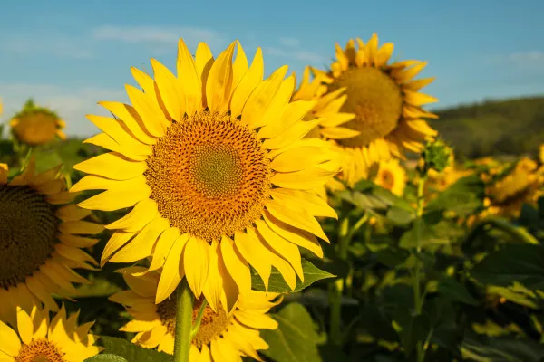

Sobre os Girassóis
O girassol é uma planta conhecida por sua grande flor amarela, que se destaca por acompanhar a trajetória do sol ao longo do dia. Esta planta, que simboliza vitalidade, energia e adoração, é amplamente cultivada tanto para fins ornamentais quanto para a produção de óleo e sementes comestíveis.
Curiosidades sobre Girassóis
- Os girassóis podem crescer até 3 metros de altura ou mais.
- Uma única flor de girassol pode conter até 2.000 sementes.
- O girassol é uma planta nativa da América do Norte.
- Existem cerca de 70 espécies diferentes de girassóis.
Contato
E-mail: mariannygoncalvesmoreira@gmail.com